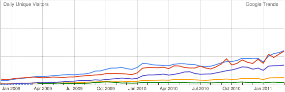
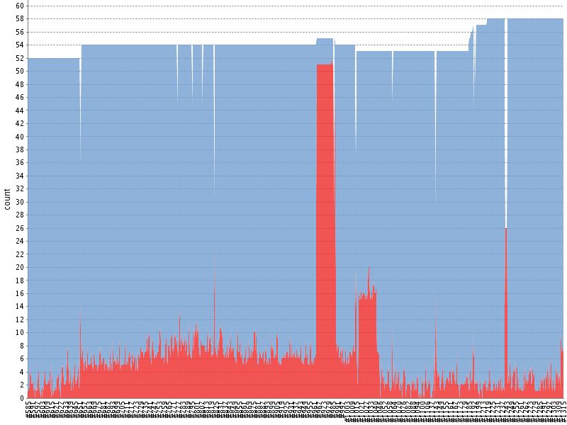

| space, → | next slide |
| ← | previous slide |
| d | debug mode |
| ## <ret> | go to slide # |
| c | table of contents (vi) |
| f | toggle footer |
| r | reload slides |
| z | toggle help (this) |

Feature: Manage websites via REST API
As a jimdo developer
I want to manage websites via a REST API
So that I can test new features easilyScenario: Create a new website
When I send a POST request to "/api/websites" with body
"""
{
"username" : "cucumber",
"title" : "Can I haz Cukes?"
}
"""
Then the response is application/json
And the status is 200 OK
And I can reach the website with username "cucumber"
And the website html title is "Can I haz Cukes?"@browser @rest-api
Feature: REST API and browser testing works
Background:
Given I send a POST request to "/api/websites" with body
"""
{
"username" : "cucumber",
"title" : "Hello world.",
"pages" : [
{ "title": "Cucumber rocks!" }
]
}
"""
And the response is JSON and the status is 200 OK
And I can reach the website with username "cucumber"
Scenario: Hello World!
When I navigate to the website "cucumber"
And I log in with "jimdo"
Then I see the page "Cucumber rocks!" in the navigation@browser @rest-api
Feature: REST API and browser testing works
Background:
Given I have a website named "cucumber"
And a page named "Cucumber rocks!"
Scenario: Cucumber rocks.
When I navigate to the website
Then I see the page "Cucumber rocks!" in the navigationAfter("@rest-api") do
# always cleanup the test websites
http_req("DELETE", "/api/websites")
endit "should adhere to the naming scheme" do
name.should ~= /cuke4*uke/
end@browser.goto('jimdo.com')
@browser.div(:id, 'header')
.ul(:class, 'nav').links
timed out after 30 seconds
(Watir::Wait::TimeoutError)Element is no longer attached to the DOM
(Selenium::WebDriver::Error::ObsoleteElementError)When /^I log in with "([^"]*)"$/ do |pwd|
@browser.input(:text, 'passwd').set(pwd)
@browser.link(:id, 'login').click
endWhen /^I log in with a valid password$/ do
login = Login.new(@browser)
login.set_credentials
endclass Login
def initialize(browser)
@browser = browser
end
def set_credentials(pwd = 'foo')
@browser.input(:text, 'passwd').set(pwd)
@browser.link(:id, 'login').click
end
end